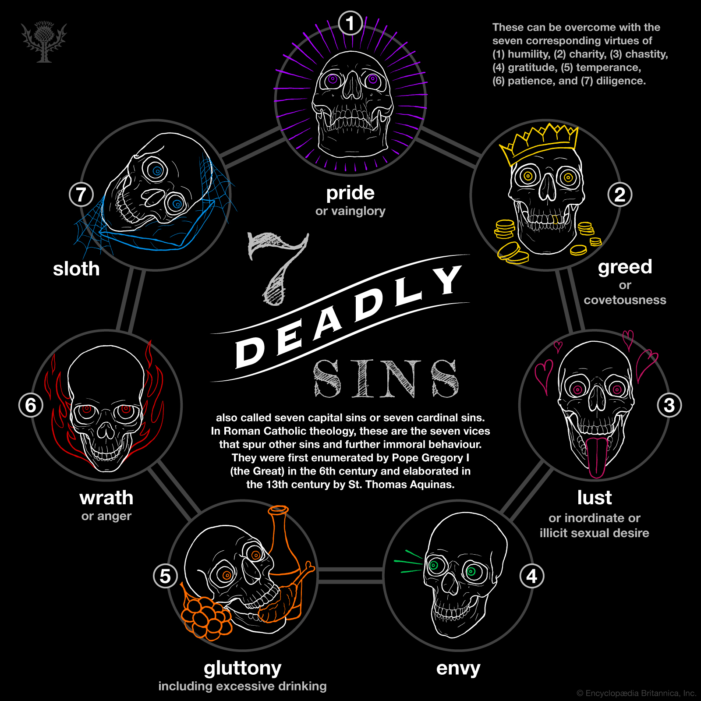

The Bible says the following in Hebrews 13:5, “Let your conduct
be without covetousness; be content with such things as you
have. For He Himself has said, ‘I will never leave you nor forsake you.’”
Other biblical texts which mention greed include: Exodus 20:17, Proverbs 11:24, Proverbs 28:25, Ecclesiastes 5:10, Philippians 4:6 and 1 Timothy 6:9-10.
Charity cures greed by putting the desire to help others above storing up treasure for one’s self.